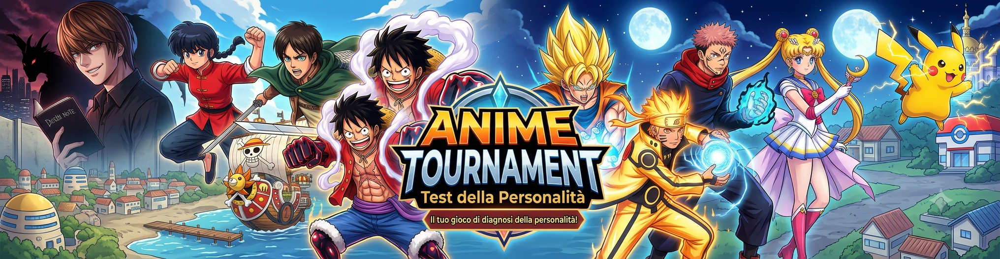

Scopri la tua psiche profonda partendo dal tuo anime preferito
Scegli tra due titoli alla volta. A ogni scelta il tuo preferito resta e l'altro vola via. Alla fine sveleremo il tuo anime numero uno... e cosa dice davvero di te (senza pietà).
26 titoli · circa 12 scelte · 2 minuti